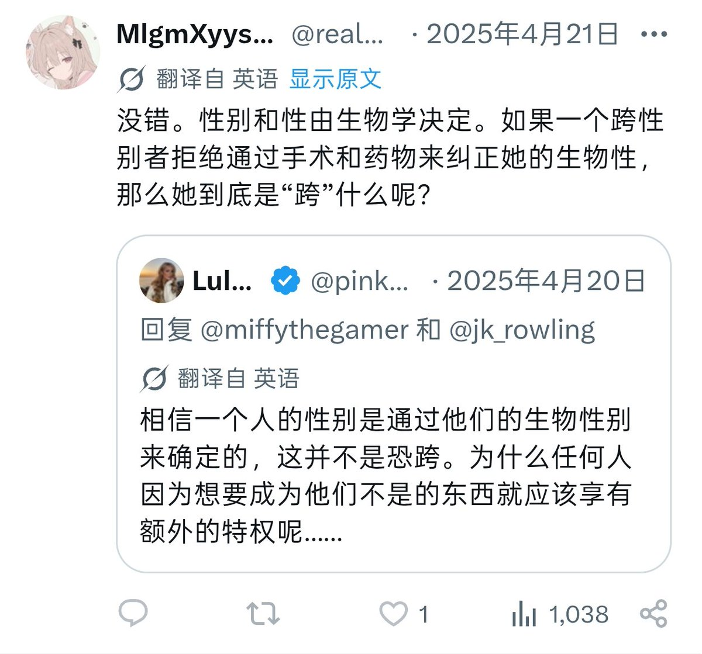
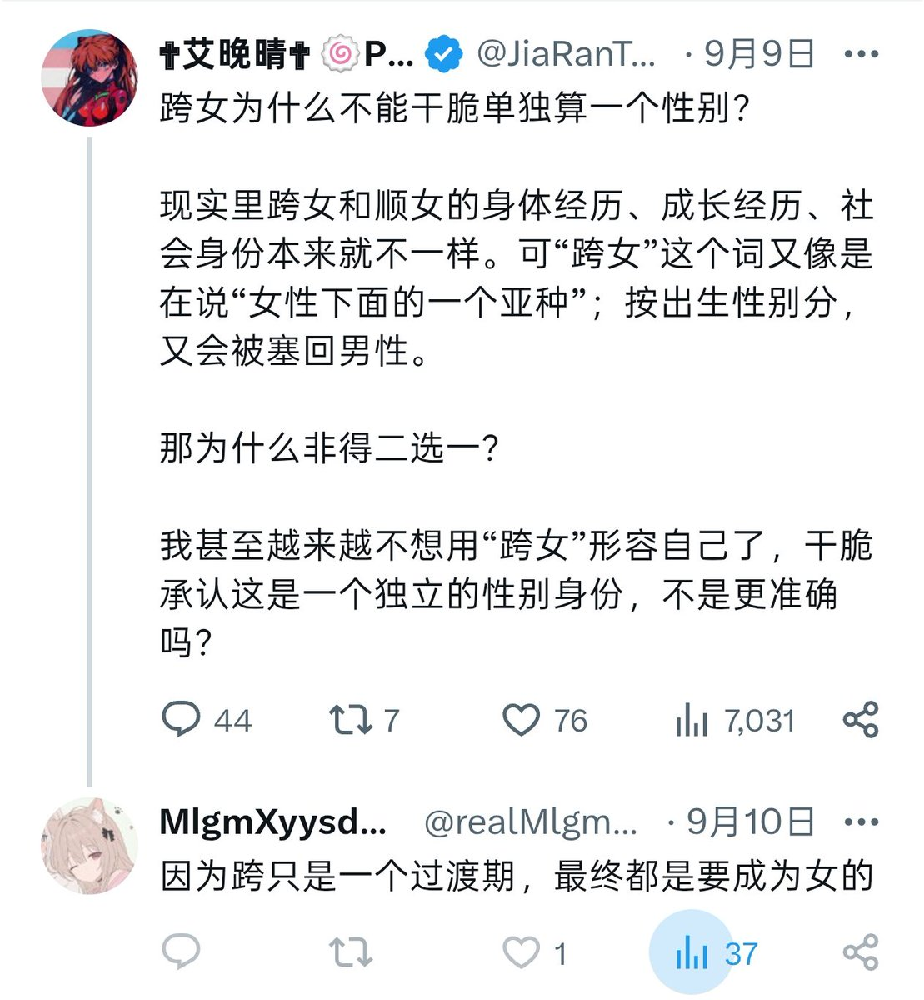
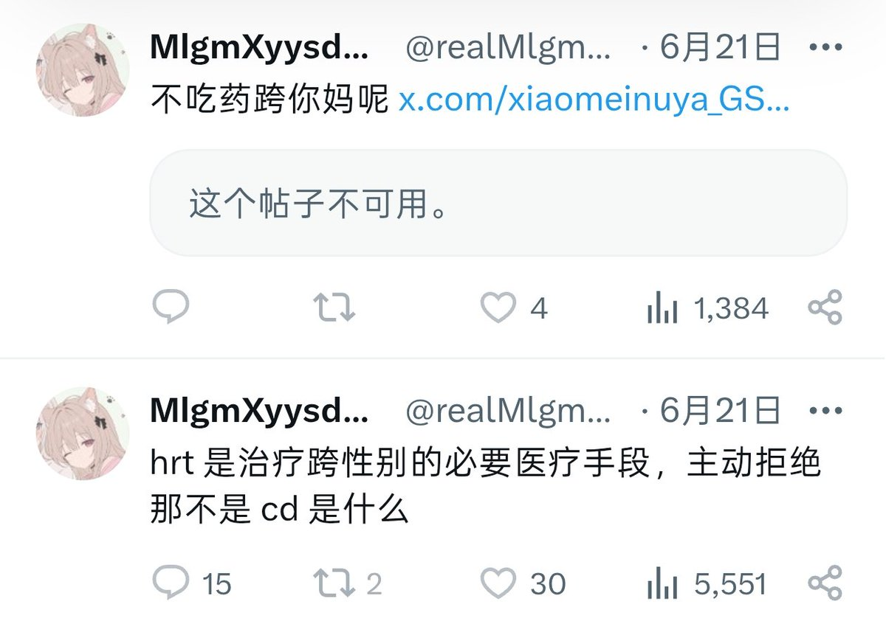

我都懒得评价这种人，要我极端点那我就说异构顺直算了，最烦这种以为自己染色体出点问题就是顺女的，你好我是一个外周性染色体核型为XY、发育过程正常的“正常生物学男性”，请问我可以觉得你是怪物吗？
不是说我针对间性者或者中奖党，而是它之前搁我帖子下面跳脚说非二元和酷儿是招笑的、实现不了的，人类生理上就是二元性别，完事和我吵了两下先急眼给我b了，当时我也不想多说什么回b一下完事了。但今天又让我发现这种何不食肉糜的傻福言论了那我新账旧账一起算了，你说N55是炒作狗但我觉得你也没比她好到哪去你知道吗？你这个自认为已经“脱跨入顺”但实际上连发育过程都和“正常人类”不一样的、不知道应该算男性还是女性的异形。
以上攻击我只对你展开，只公开歧视你，不对别人进行任何泛化指代，这是我对一个敌人最大的敬意

不是说我针对间性者或者中奖党，而是它之前搁我帖子下面跳脚说非二元和酷儿是招笑的、实现不了的，人类生理上就是二元性别，完事和我吵了两下先急眼给我b了，当时我也不想多说什么回b一下完事了。但今天又让我发现这种何不食肉糜的傻福言论了那我新账旧账一起算了，你说N55是炒作狗但我觉得你也没比她好到哪去你知道吗？你这个自认为已经“脱跨入顺”但实际上连发育过程都和“正常人类”不一样的、不知道应该算男性还是女性的异形。
以上攻击我只对你展开，只公开歧视你，不对别人进行任何泛化指代，这是我对一个敌人最大的敬意



我都懒得评价这种人，要我极端点那我就说异构顺直算了，最烦这种以为自己染色体出点问题就是顺女的，你好我是一个外周性染色体核型为XY的“生物学男性”，请问我可以觉得你是怪物吗？ https://t.co/7cHKtW2Mco